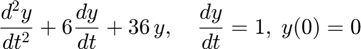
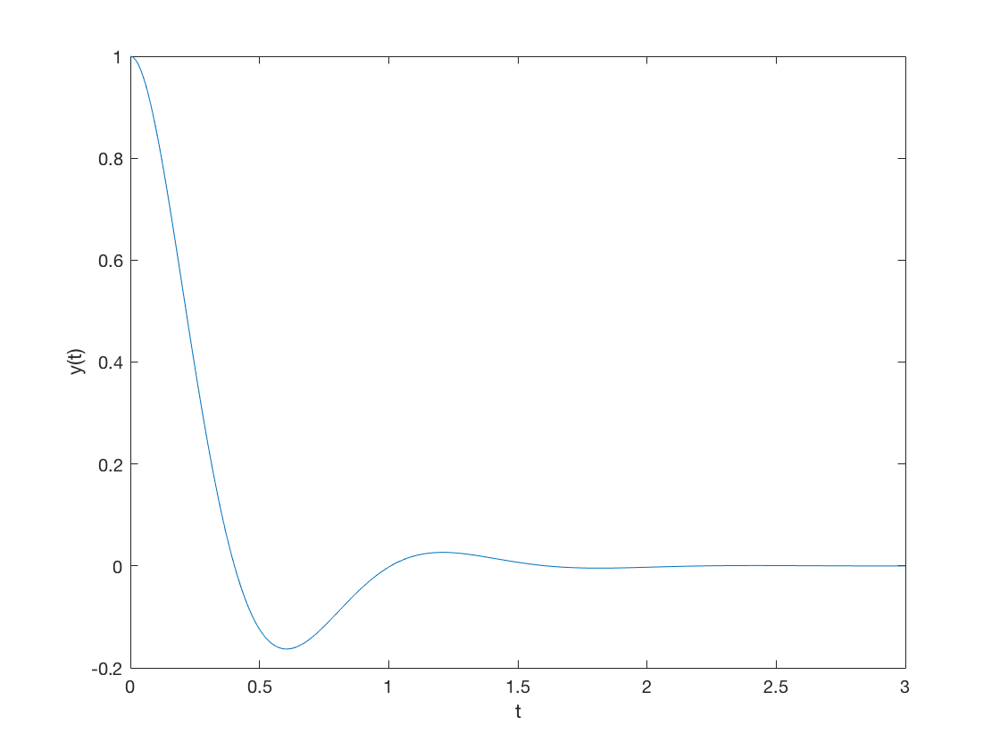
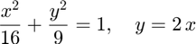

Some Examples on MATLAB Symbolic Processing
Contents
Example 1: Solution of Ordinary Differential Equations
اكتب شفرة MATLAB لحل المعادلة التفاضلية الاتية:

بين كيف يمكن رسم الحل الناتج في الفترة [0,3] بخطوة 0.01
syms t z = dsolve('D2y+6*Dy+36*y=0','y(0)=1','Dy(0)=0') tm=0:0.01:3; f=subs(z,t,tm); plot(tm,f); xlabel('t'); ylabel('y(t)');
z = exp(-3*t)*cos(3*3^(1/2)*t) + (3^(1/2)*exp(-3*t)*sin(3*3^(1/2)*t))/3
Example 1: Solution of Ordinary Differential Equations (Another Solution)
syms t z = dsolve('D2y+6*Dy+36*y=0','y(0)=1','Dy(0)=0',t); tm=0:0.01:3; for k=1:length(tm) f(k)=subs(z,t,tm(k)); end plot(tm,f); xlabel('t'); ylabel('y(t)');
Example 2: Curve Intersection
Intersection of a line with a circle or ellipse إيجاد نقط تقاطع خط مستقيم مع دائرة او قطع ناقص
مثلا

الطريقة الاولي: باستخدام امر solve
تكون أوامر MATLAB كما يلي
syms x y eq1= x^2/16+y^2/9-1; eq2=y-2*x; s=solve(eq1,eq2); x= s.x y= s.y
احداثيات نقط التقاطع x = -(12*73^(1/2))/73 (12*73^(1/2))/73 y = -(24*73^(1/2))/73 (24*73^(1/2))/73
Example 2: Curve Intersection (Another Solution) الطريقة الثانية:
بالتعويض عن y في eq1 بدلالة x (من eq2) ثم إيجاد جذور متعددة الحدود الناتجة وتمثل الاحداثيات x لنقاط التقاطع ثم التعويض في y لإيجاد الاحداثيات y.
وعليه تكون أوامر MATLABكما يلي:
syms x y z eq1= x^2/16+y^2/9-1; eq2=y-2*x; polx=subs(eq1,y,2*x); r=sym2poly(polx) لإيجاد متعدد الحدود x=roots(r) y=subs(2*z,z,x)
r = 0.5069 0 -1.0000 x = 1.4045 -1.4045 y = (24*73^(1/2))/73 -(24*73^(1/2))/73